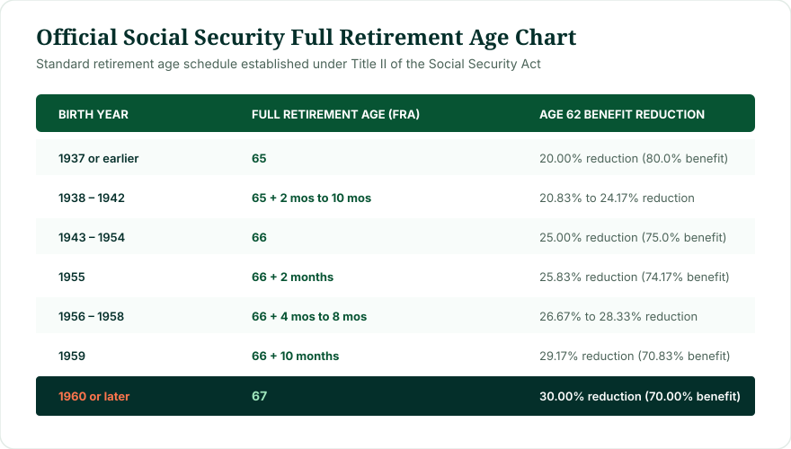
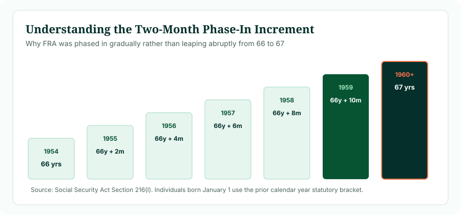

The social security retirement age chart outlines your statutory Full Retirement Age based on birth year. For workers born in 1960 or later, FRA is 67. For those born from 1943 through 1954, FRA is 66. The transition years from 1955 to 1959 increase by exactly two months for each successive year (66+2m for 1955, 66+4m for 1956, 66+6m for 1957, 66+8m for 1958, and 66+10m for 1959).
The social security retirement age chart is the primary visual reference used by financial planners, human resources departments, and individual retirees to evaluate benefit timing. Mandated under Section 216(l) of Title II of the Social Security Act, this statutory timetable establishes the exact age in years and months at which you qualify for your unreduced Primary Insurance Amount (PIA). Use the chart below to find your cohort, then use our Social Security Age Calculator to map your personal calendar milestones.
1. Complete Social Security Full Retirement Age Chart
The complete statutory timetable established under federal law covers all covered workers from the inception of the program to the present day:

Figure 1: Statutory Full Retirement Age chart and early claiming reduction percentages.
| Year of Birth | Full Retirement Age (FRA) | Monthly Early Claim Reduction at 62 | Maximum Delayed Benefit at 70 |
|---|---|---|---|
| 1937 or earlier | 65 | 20.00% (receives 80.00% of PIA) | 126.00% of PIA |
| 1938 | 65 + 2 months | 20.83% (receives 79.17% of PIA) | 126.50% of PIA |
| 1939 | 65 + 4 months | 21.67% (receives 78.33% of PIA) | 127.00% of PIA |
| 1940 | 65 + 6 months | 22.50% (receives 77.50% of PIA) | 127.50% of PIA |
| 1941 | 65 + 8 months | 23.33% (receives 76.67% of PIA) | 128.00% of PIA |
| 1942 | 65 + 10 months | 24.17% (receives 75.83% of PIA) | 128.50% of PIA |
| 1943–1954 | 66 | 25.00% (receives 75.00% of PIA) | 132.00% of PIA |
| 1955 | 66 + 2 months | 25.83% (receives 74.17% of PIA) | 130.67% of PIA |
| 1956 | 66 + 4 months | 26.67% (receives 73.33% of PIA) | 129.33% of PIA |
| 1957 | 66 + 6 months | 27.50% (receives 72.50% of PIA) | 128.00% of PIA |
| 1958 | 66 + 8 months | 28.33% (receives 71.67% of PIA) | 126.67% of PIA |
| 1959 | 66 + 10 months | 29.17% (receives 70.83% of PIA) | 125.33% of PIA |
| 1960 or later | 67 | 30.00% (receives 70.00% of PIA) | 124.00% of PIA |
2. Social Security Retirement Age Chart 1955–1960
The most heavily researched segment of the retirement timetable is the 1955 to 1960 transition window. During this six-year stretch, Congress phased in the final move from 66 to 67 by adding precisely two months of age per birth year:

Figure 2: The stepped two-month phase-in timeline governing birth cohorts from 1954 to 1960.
- Social Security Retirement Age Chart 1955: FRA is 66 years and 2 months. Individuals in this cohort reached FRA between March 2021 and February 2022.
- Social Security Retirement Age Chart 1956: FRA is 66 years and 4 months. Attainment occurred between May 2022 and April 2023.
- Social Security Retirement Age Chart 1957: FRA is 66 years and 6 months. Attainment occurred between July 2023 and June 2024.
- Social Security Retirement Age Chart 1958: FRA is 66 years and 8 months. Attainment occurs between September 2024 and August 2025.
- Social Security Retirement Age Chart 1959: FRA is 66 years and 10 months. Attainment occurs between November 2025 and October 2026.
- Social Security Retirement Age Chart 1960: FRA is 67 years flat. Attainment begins in 2027 and applies to all subsequent birth cohorts.
3. How to Read and Apply the Social Security Retirement Age Chart
To use the chart effectively for personal retirement planning, follow three analytical steps:
- Locate Your Statutory Row: Find the line corresponding to your birth year. If your birthday is January 1, remember to move up one row to the previous year, as federal law (POMS GN 00302.010) considers you to attain your age on December 31 of the prior calendar year.
- Identify Your Earliest Reduction Factor: Observe the age 62 column. If your FRA is 67, claiming at 62 means receiving 70% of your PIA. If your FRA is 66, claiming at 62 yields 75% of your PIA.
- Identify Your Delayed Milestone: Review the age 70 maximum benefit. Waiting past FRA yields 8% per year in Delayed Retirement Credits until you reach age 70.
4. Why Did Social Security Full Retirement Age Increase?
When Social Security paid its first monthly check to Ida May Fuller in 1940, life expectancy for a 65-year-old was approximately 12 to 14 additional years. By the 1980s, the typical 65-year-old was living 17 or more additional years, and the massive Baby Boomer generation was heading toward retirement with fewer younger workers behind them to support trust fund inflows.
The bipartisan National Commission on Social Security Reform (the Greenspan Commission) concluded that either payroll taxes had to increase sharply, benefits had to be slashed immediately, or the Full Retirement Age had to be phased upward. Congress chose the phase-in approach in the Social Security Amendments of 1983. By scheduling the changes decades in advance, workers born in 1960 and later were given more than 35 years of advance notice to prepare for an FRA of 67.
5. Social Security Age 66 vs 67: The Financial Difference
Many pre-retirees wonder: "What difference does one single year in FRA actually make?" In statutory benefit math, a one-year increase in FRA from 66 to 67 impacts claiming in two major ways:
The 5% Reduction Spread at Early Claiming
Because there are 60 months between 62 and 67 instead of 48 months between 62 and 66, early claimants with an FRA of 67 absorb an extra 24 months of reductions (24 × 5/12% = 5.0% lower monthly check).
Similarly, for workers who delay claiming until age 70, someone with an FRA of 66 earned four full years of delayed credits (+32%), whereas someone with an FRA of 67 earns three full years of delayed credits (+24%). In both cases, the later FRA reflects a slightly higher threshold to achieve full and maximum payouts.
6. Can You Retire Before Full Retirement Age?
Yes. The chart outlines Full Retirement Age, but it does not dictate when you are allowed to retire. Eligible workers who have accumulated at least 40 Social Security work credits (roughly 10 years of covered employment) can begin receiving retirement checks at age 62.
However, claiming early has three lasting consequences:
- Permanent Benefit Reduction: Your checks are reduced for the rest of your life. They do not increase back to 100% when you reach your FRA.
- Retirement Earnings Test: If you continue working while claiming before FRA, the SSA will temporarily withhold $1 in benefits for every $2 you earn above the annual exempt limit ($23,400 in 2025).
- Lower Survivor Baseline: A permanently reduced worker benefit can result in a smaller surviving spouse benefit after your death.
7. What Happens If You Wait Until Age 70?
If you delay claiming past your statutory Full Retirement Age, you earn Delayed Retirement Credits (DRCs) at a rate of 8% per year (two-thirds of 1% per month). For someone with an FRA of 67, waiting until age 70 increases their benefit to 124% of their PIA.
Delayed retirement credits stop accumulating once you reach age 70. There is zero financial incentive or bonus for waiting until 71 or later. Delaying past age 70 permanently forfeits monthly checks with no offsetting increase.
8. Full Retirement Age vs Personal Job Retirement
It is vital to distinguish between your Social Security Full Retirement Age and your personal retirement date:
- FRA Is an Actuarial Benchmark: It is solely a formula parameter used by the federal government to calculate your check.
- Personal Retirement Is a Life Decision: You can retire from your job at age 58, 62, 65, or 72. You can leave the workforce years before claiming Social Security, or claim Social Security while continuing full-time work.
9. Social Security Retirement Age vs Medicare Age (65)
Although the Social Security retirement age chart has moved to 66 and 67, Medicare eligibility remains locked at age 65. Congress did not alter Medicare eligibility when it passed the 1983 Social Security Amendments.
Consequently, if your Full Retirement Age is 67, you must still take action at age 65 to enroll in Medicare during your 7-month Initial Enrollment Period (starting 3 months before your 65th birthday month), unless you have qualifying coverage through active group employment.
10. Calculating Your Milestone Dates
To determine your personal milestone calendar dates:
- Locate your birth year in the chart to identify your FRA years and months.
- Add 62 years to your birth date to identify your earliest eligibility date.
- Add your FRA years and months to your birth date to find your 100% PIA attainment date.
- Add 70 years to your birth date to find your maximum benefit date.
You can execute this instantly with our verified tool below.
11. Practical Cohort Examples
Example 1: Born July 18, 1956
Chart Lookup: Birth year 1956 → Full Retirement Age is 66 years and 4 months.
Milestone Dates: Earliest eligibility at 62 occurred in July 2018 (73.33% benefit). FRA was reached in November 2022 (100% PIA). Maximum age 70 milestone arrives in July 2026.
Example 2: Born April 12, 1959
Chart Lookup: Birth year 1959 → Full Retirement Age is 66 years and 10 months.
Milestone Dates: Earliest eligibility at 62 occurred in April 2021 (70.83% benefit). FRA is reached in February 2026 (100% PIA). Maximum age 70 milestone arrives in April 2029.
Example 3: Born December 3, 1964
Chart Lookup: Birth year 1964 → Full Retirement Age is 67 years flat.
Milestone Dates: Earliest eligibility at 62 arrives in December 2026 (70.00% benefit). FRA arrives in December 2031 (100% PIA). Maximum age 70 milestone arrives in December 2034 (124% benefit).
Calculate Your Exact Milestone Dates
Don't guess your retirement dates from static tables. Enter your birth date in our calculator to see your Full Retirement Age, early claiming dates, and age 70 milestone.
Open Social Security Age Calculator →12. Frequently Asked Questions
What is the Social Security retirement age chart?
The Social Security retirement age chart is the official federal timetable establishing Full Retirement Age (FRA) based on year of birth, ranging from 65 to 67 years.
What is Full Retirement Age for someone born in 1955?
For someone born in 1955, Full Retirement Age is 66 years and 2 months.
What is Full Retirement Age for someone born in 1956?
For someone born in 1956, Full Retirement Age is 66 years and 4 months.
What is Full Retirement Age for someone born in 1957?
For someone born in 1957, Full Retirement Age is 66 years and 6 months.
What is Full Retirement Age for someone born in 1958?
For someone born in 1958, Full Retirement Age is 66 years and 8 months.
What is Full Retirement Age for someone born in 1959?
For someone born in 1959, Full Retirement Age is 66 years and 10 months.
What is Full Retirement Age for people born in 1960 or later?
For all individuals born in 1960 or later, Full Retirement Age is 67 years.
Is Social Security retirement age 66 or 67?
It depends on your birth year. People born between 1943 and 1954 have an FRA of 66. Those born between 1955 and 1959 transition in two-month steps. Those born in 1960 or later have an FRA of 67.
Can I claim Social Security at 62 under the chart?
Yes. Age 62 is the earliest claiming age across all cohorts. However, claiming at 62 with an FRA of 67 results in a 30% reduction, compared to a 25% reduction for an FRA of 66.
Does the retirement age chart determine Medicare eligibility?
No. Medicare eligibility remains fixed at age 65 for all eligible Americans, regardless of your Social Security Full Retirement Age.
14. Reviewed & Methodology
This chart is based on the statutory schedule published under Section 216(l) of Title II of the Social Security Act (42 U.S.C. § 416(l)) and Title 20 of the Code of Federal Regulations (§ 404.409).
- Statutory Reference: Social Security Act Section 216(l); 20 C.F.R. § 404.409; SSA POMS GN 00302.010.
- Legal Age Attainment: Calculations adhere to federal administrative standards providing that legal age attainment occurs on the day preceding the individual's birth date for January 1 births.
- Educational Purpose: This guide provides general informational and mathematical analysis. It does not provide personalized tax, legal, or investment advice. Verify individual benefit determinations with the Social Security Administration.
- Last Editorial Review: October 2026 by Navjeet Kamboj.